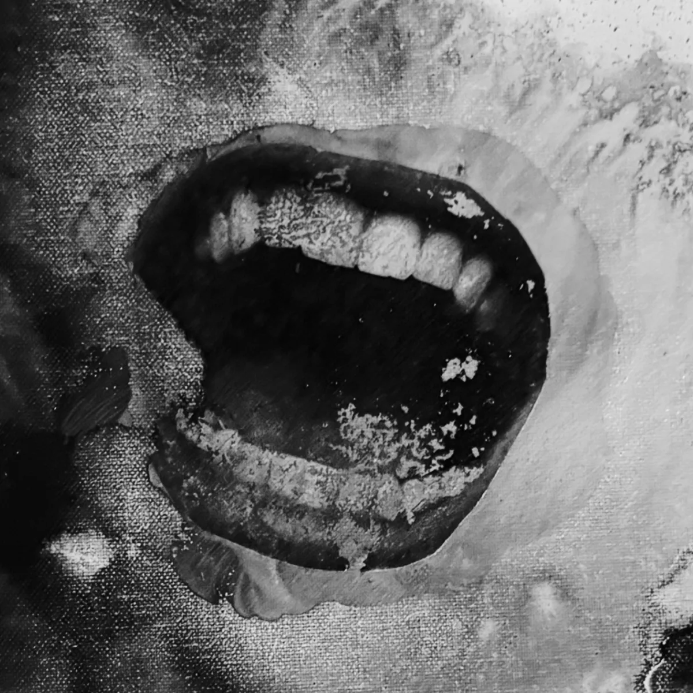
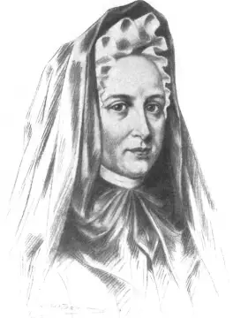

“We must remember that God is all mouth.”
Madame Guyon (1648–1717) was a mystic whose writings on inward prayer, abandonment to God, and pure love circulated widely across France. Although she was never formally condemned as a heretic by name, she was imprisoned several times, including in the Bastille.